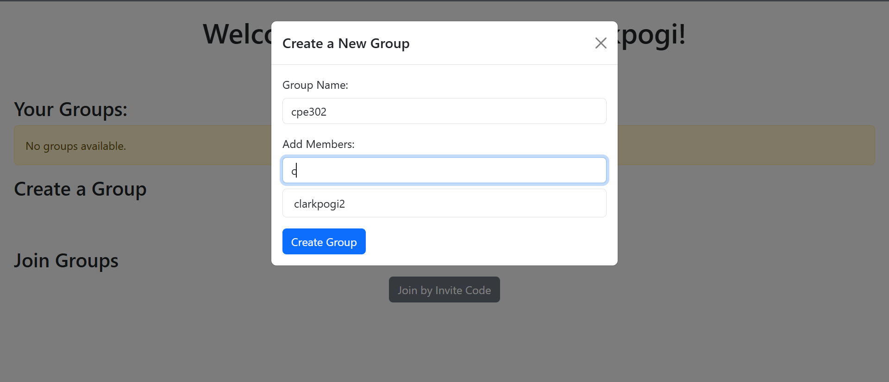
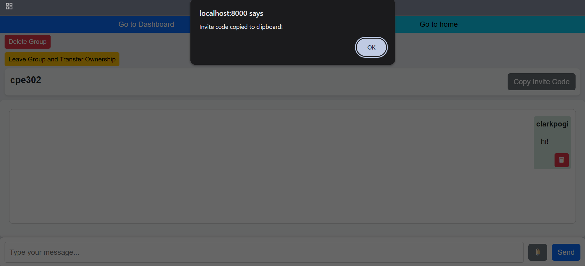
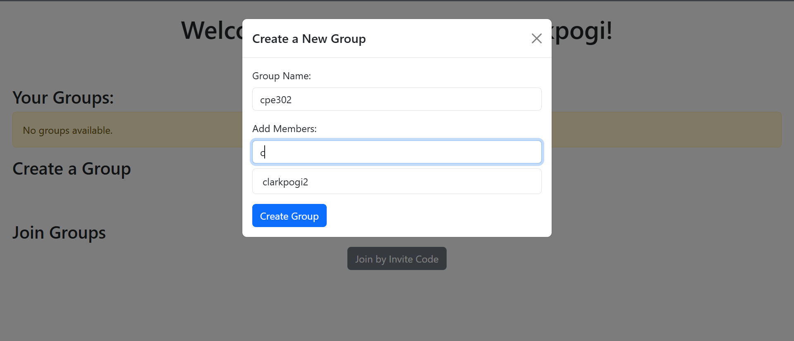
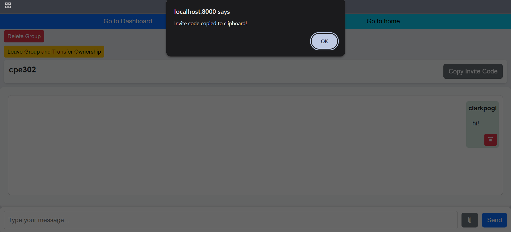

Project Overview
PayZone is a web-based payroll system website project during my 2nd-year 1st semester in college. This website project helps businesses manage employees, calculate salaries, and track payroll records. It was built using Django. Since this was our first full-stack website and we were also dealing with difficult subjects in our course, the project wasn't fully finished. Even so, we learned a lot about teamwork, full-stack development, and applying object-oriented programming.
My Contribution
I implemented login and registration, developed warning and error messages, created the animated logo and other icons, assisted with frontend designing, created animations and loading screen using JavaScript, fixed bugs, and handled deployment.
Project Overview
In-Bang (short for “internet videos” in Korean) is a Netflix-like video streaming website built with Django and React. We couldn’t fully deploy it or add a subscription system because we weren’t financially rich, and we were also dealing again with tough major subjects during our 2nd-year 2nd semester. Even so, it was a great way to learn full-stack development and teamwork, but this time with React as the frontend.
My Contribution
I helped the team in implementing the frontend and backend using Django and React and coordinated with the team to make sure the website works as it is.
Project Overview
Tako Naidu is a blog website for a small business that sells authentic Japanese takoyaki. People can read posts about the business, check out the menu, order using cash or GCash, and even book a rider for delivery. Our professor gave us this project to help small businesses get their products online, and this project helped me learn to code the frontend way better than before. This blog project was made during my 3rd year of college.
My Contribution
I developed the website, with my teammates helping me by giving ideas, contacting the business owner, and assisting with the presentation.

 



Project Overview
Holy Chat is a real-time chat application that lets users create and manage groups to communicate easily. This was our project during the finals term in my 3rd year of college for Software Development 1. We chose to build a Collaborative Study Platform, and it was developed using Django. This project was done with a different group than the ones I worked with on the Tako Naidu project.
My Contribution
I handled the development of the website, while my teammates helped with the presentation.